- Overview
- Trigger Timing
- How to Use Case Variables
- Creating Triggers
- Trigger Management
- Inserting a Trigger in a Process
- Debugging Triggers
- When canceling/pausing/reassigning/opening cases
- Timeout Triggers for Self Service Tasks
Overview
A trigger is a piece of PHP code that can be inserted into a process. Triggers provide the appropriate framework to perform complex calculations and add additional functionality to processes.
A ProcessMaker trigger is parsed like a PHP script, so normal PHP variables and functions can be used inside triggers, along with ProcessMaker's case variables and system variables.
Trigger Timing
Triggers can be fired at many points during the process:
- Before a step is executed (i.e., Dynaforms, Input Documents and Output Documents).
- After a step is executed.
- Before a user is assigned (designated) to work on the next task in the process.
- Before a case is routed to the next task in the process.
- After a case is routed to the next task in the process.
For example, a process whose first task contains a Dynaform step and an Input Document step will fire the triggers in the following order:
- Before step trigger
- Dynaform step
- After step trigger
- Before step trigger
- Input Document step
- After step trigger
- Before assignment trigger
- Assignment of user for next task
- Before routing trigger
- Routing to next task
- After routing trigger
When to Set Triggers to Fire
| If the step is a Dynaform, this is a good point to set any case variables that will be displayed in the Dynaform's fields. If the step is an Output Document, then case variables can be set to be used in the Output Document's template. |
After a Dynaform step, the data from the Dynaform's fields exists as case variables, but hasn't yet been submitted to the database and any files uploaded to File fields have not yet been saved to the file system. This a good point to alter the data before it gets submitted. Warning: If the die(), exit() or some other function is called that stops the completion of the trigger, it will prevent the data and files in the Dynaform from being saved to the database. To use A trigger set to fire after an Input Document step is fired every time another file is added to the Input Document, so it may be fired multiple times. The trigger is fired after the new file has already been added to the database and saved in the server's file system. Therefore, it isn't possible to prevent the file from being saved with trigger code, but it is possible to look up the latest file that was added to the APP_DOCUMENT table and call AppDocument::remove() to eliminate the latest file from the Input Document. Note: The trigger will not be executed, clicking on Next Step. If no file is uploaded to an Input Document, then a trigger set to be fired after the Input Document will not be fired. To set the trigger to always fire, then set the trigger to fire before the next step in the task (or before assignment if at the last step in the task). |
If the next task in the process uses Value Based Assignment, this is a good point to set the variable used to determine the next user. Note that before assignment triggers will always fire, even in final tasks when there is no user assignment for the next task. | This is a good point to set any variables used by conditions to direct the flow to the next activity (task or sub-process). | At this point, the record for the next task has already been written to the database in the wf_<WORKSPACE>.APP_DELEGATION table, so it can be consulted with database queries. Before this point, the next task and the next user can not be known for sure. |
Case Variables
In addition to normal PHP variables, triggers can use case variables, which are variables that hold information about a ProcessMaker case and can only be used while that case is running. These variables can be defined by clicking on Variables in the Process Objects menu on the process map. Controls in Dynaforms, such as textboxes, dropdown boxes, grids, etc., can be associated to a case variable to hold the values entered into that control. When a user clicks a submit button in a Dynaform, the values in the controls are saved to their case variables, which are automatically created for each control when data is entered as the case variable value.
Not only can triggers access case variables defined in the Variables list, they can also define additional case variables. If a subsequent Dynaform in the case uses the variable in a field, the field's value will automatically be set to the value of the variable. When the Dynaform is submitted, the value in the field will be assigned to its case variable.
For instance, a trigger could define the case variable @@ApplicationDate and store the current date in it. A subsequent Dynaform containing the field whose variable is @@ApplicationDate would display that date. The user could alter the date in the Dynaform, which would then change the value stored in the case variable @@ApplicationDate. A subsequent trigger could examine @@ApplicationDate and make calculations based on that date.
Case variables are defined like normal PHP variables, except they use @@, @%, @#, @?, @$ and @= instead of $ to identify them. For example:
@@myVariable = "Hello world!";
Where:
@@myVariable | A case variable parsed as a string. |
= | The equals symbol means that the entire right side of the expression will be assigned to a variable. |
| "Hello word!" | A string of characters to assign to the variable. All strings need to either be enclosed in '(single quotation marks) or " (double quotation marks). In contrast, integers such as 987 and floating-point numbers such as 19.87 are not enclosed in quotation marks. | ; | A semicolon indicates the end of a trigger statement. Each trigger statement should be finished with a semicolon. |
Note that case variables only have scope when their case is open. To create global variables that can be accessed by any case, use this workaround.
Typing Rules for Case Variables
When referencing a case variable within a trigger, take into account the following typing rules:
@@variable_name
The variable will be parsed as a string. If originally another type, it will be converted to a string. So-1,0and12.45become"-1","0"and"12.45", respectively.@%variable_name
The variable will be parsed as an integer (a whole number). If originally another type, it will be converted to an integer. A real number will be converted to a whole number, so 12.99 becomes 12. The decimal portion of the number is dropped and there is no rounding up in the conversion. A string that contains numbers will be converted to a whole number, so"655"and"34.19"become655and34, respectively.@#variable_name
The variable will be parsed as a float type (a real number with decimals).@?variable_name
The variable will be parsed as a string used in a URL. The string is transformed with PHP's encodeurl(), so all spaces become pluses (+) and all characters which aren't letters, except underscores (_), are replaced by a % followed by a 2 hexadecimal digits, so that the string can be used in posted data to/from WWW forms.@$variable_name
The variable will be parsed as a string for use in an SQL query. Any single quotation marks (') will be preceded by a backslash. So"I'm telling you it's a boy!"becomes"I\'m telling you it\'s a boy!".@=variable_name
The variable's type will not be changed and it is parsed as its original type. Always use this when referencing objects and arrays.
For example, this statement uses three case variables which are parsed as a string, an integer and its original type, respectively.
@@other_value = @%any_number + @=age - 10;
Where:
any_numbercould be a number from a text field in a Dynaform; this variable will be parsed as an integer value.agecould be a field in any Dynaform, but it's type will not be changed.
Type conversion of case variables only happens when the variable is an R-value, which means that it is what is on the right-hand side of an assignment statement and is assigned from:
L-value (assigned to) = R-value (assigned from);
If a case variable is an L-value or is assigned to, no type conversion happens. For example:
$a = @@b; //R-value, so transformed to string before assignment
@#c = "40.0"; //@#c is a L-value, so assigned a string and no type conversion
@@d = 40.0; //@#d is a L-value, so assigned a float and no type conversion
It is important to note that variable_name follows the PHP rules for variable name definition. That means a valid case variable name in ProcessMaker starts with a letter or underscore, followed by any number of letters, numbers, or underscores. Case variables are case sensitive, so @@myvar, @@MyVar and @@MYVAR are three different variables.
If passing values between triggers and Dynaforms, make sure that the case variable name in the trigger is spelled the same as the variable name used in the Dynaform field. ProcessMaker case variables are stored separately from normal PHP variables, so a trigger with $myVar and @@myVar would have two different variables.
ProcessMaker retains the original value of case variables as normal PHP variables, so they not altered by using the different conversion rules. For instance:
$sum = 5 + @%MyVar; # Use MyVar as the integer 22
$str = "Sum: " . @@MyVar; # Use MyVar as the string "22.345"
# @=MyVar still equals its original value of 22.345
$total = @=MyVar + 1; # $total equals 23.345
ProcessMaker case variables can not be inserted into strings like normal PHP variables. The following statement will not work:
To insert case variables in a string, either reassign them to normal PHP variables and insert them:
$my_age = @%MyAge;
$str = "My name is $my_name and my age is $my_age.\n";
Or use the dot operator (.) to concatenate strings with case variables:
When a case variable that is an integer or floating point number is concatenated with . (dot operator), it is automatically converted to a string.
How to Use Case Variables
Case variables hold data specific to a case and can either be set in a Dynaform field or a trigger. Unlike system variables, which are defined automatically by ProcessMaker, case variables are defined in the Variables list inside the Process Designer or by defining them in triggers. Both types of variables can be used in:
- Output Documents
- Input Documents
- Process File Manager
- Triggers
- Assigning Steps to Tasks
- Dynaform notifications
For instance, inside the properties of an activity, in the Variable for Case priority field:

Click on the @@ button to access the list of case and system variables.

Prefix.Select the prefix the variable will use in the field. These prefixes are explained in this section.Help icon.Hover the mouse pointer over the "?" icon to view the existing prefixes for variables:

Text to search.Enter the name of the variable to be found.Variable.This column lists the names of all existing variables. To add a variable to the list, select it and click on the Insert Variable button at the bottom of the window.Label.This column indicates whether it is a system or case variable.Pagination control.Each page lists only ten items; navigate through all existing variables using this control.Insert variable.Click on this button to insert a variable.
System Variables in Triggers
In addition to case variables, triggers can also use system variables, which are predefined variables that have the same syntax as case variables and hold information about the current ProcessMaker system.
ProcessMaker has the following system variables:
| Variable Name | Variable Description | @@SYS_LANG | Current system language in two letter ISO 639-1 code, which by default is "en" (English). | @@SYS_SKIN | Current system skin, which by default is "neoclassic" in ProcessMaker 3.0.x. | @@SYS_SYS | Current workspace name, which by default is "workflow". | @@PROCESS | Current process UID. | @@TASK | Current task UID. | @@APPLICATION | Current case UID. | @@APP_NUMBER | Current case number. Available Version: 3.0.1.8 and later. | @@USER_LOGGED | UID of the current user. | @@USR_USERNAME | Username of the current user. | @%INDEX | The delegation index number, which is a positive integer that counts tasks in a process, starting from 1. If multiple tasks are operating in parallel, then each task will have a different index number. | @@PIN | The 4 character PIN, which can be used to access information about the case without being a registered user at:http://<IP-ADDRESS>:<PORT>/sys<WORKSPACE>/<LANG>/<SKIN>/tracker/login |
@@__ERROR__ | If a ProcessMaker error occurs, this system variable will be created containing the error message. Note that this system variable only exists after a ProcessMaker exception occurs. It will not be created by syntax errors in PHP or JavaScript or by errors that ProcessMaker doesn't know how to handle. |
|---|
Note: UID stands for "unique identification", which is a string of 32 hexadecimal characters that identifies objects in ProcessMaker. To find the UIDs for processes, tasks, cases, users, groups, etc., see Consulting the ProcessMaker databases.
Operators
Operators in ProcessMaker triggers are handled like PHP operators.
@#a - @#b Subtraction
@#a * @#b Multiplication
@#a / @#b Division
@#a % @#b Modulus (Remainder)
@@a . @@b String concatenation
Terminating Statements
A statement in a ProcessMaker trigger can extend for multiple lines. All statements should terminate with a ; (semicolon) to indicate where the statement ends.
$grid = @=grid;
$rows = count($grid);
for ($i=1; $i <= $rows; $i++) {
$quantity = $grid[$i]["Quantity"];
$description = addslashes($grid[$i]["Description"]);
$unitCost = $grid[$i]["UnitCost"];
$query = "INSERT INTO INVOICE_REPORTS (
QUANTITY,
DESCRIPTION,
UNIT_PRICE
)
VALUES (
$quantity,
'$description',
$price
)";
executeQuery($query, $db);
}
Examples
- Trigger 1: Gets information about the user logged in and assigns these values to the
@@issueOwnercase variable.
@@issueOwner = @=aData['firstname'] . ' ' . @=aData['lastname'];
- Trigger 2: Gets the current date and time and assigns the values to the
@@issueDatecase variable.
@@aTime = getCurrentTime();
@@issueDate = @@aDate . " " . @@aTime;
- Trigger 3: Executes a SQL query and assigns the values to case variables
@@issueDesc1and@@issueDesc2.
Creating Triggers
To following options are available to create triggers in a project:
- Create a Custom Trigger: This option allows process designers to create custom triggers in PHP.
- Copy/Import Triggers from a process: This option allows process designers to copy and import a trigger from a different or the same process within the same workspace.
- Creating a Trigger with the Wizard: This option allows process designers to create a trigger using the Trigger Wizard, in which it is possible to create triggers based on the functions of ProcessMaker or any other third-party integration.
Custom Trigger
To create a new custom trigger, go to the Process Objects toolbox in the Process Map and hover the mouse pointer over the "+" icon next to the Triggers option. Click on the option Create displayed to the right.

A new window will open to create a new custom trigger in PHP, as shown in the following image:
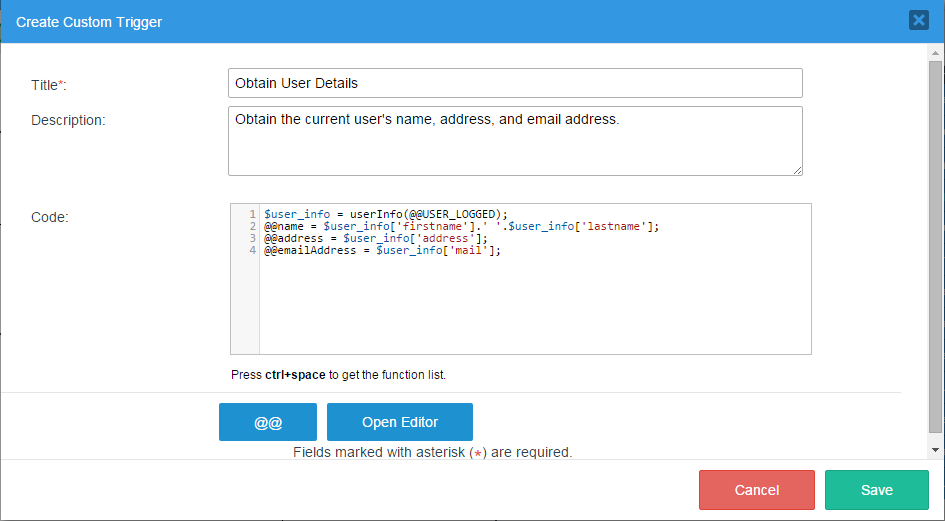
Where:
- Title: Required Field. Give the trigger a title.
- Description: Give the trigger a description.
- Code: Add the PHP code for the trigger. To make the code easier to read and to help eliminate careless errors, the code editor contains syntax highlighting, parentheses, bracket matching and line numbering.
- @@ Button: Click this button to insert either a system or case variable into the trigger code.
- Open Editor: It opens the editor in a larger window to edit triggers with longer code. After editing the code, click on Apply to save the changes or they will be lost.
- Cancel: Discards any changes in the trigger and closes the window.
- Save: Saves the changes made during the creation or editing of a trigger.

Trigger Management
To see the complete list of triggers created and other options for triggers, click on the Triggers option in the Process Objects toolbox on the Process Map:
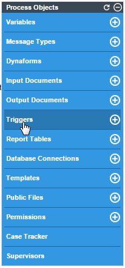
The window that is opened shows the list of triggers previously created in the project:

Where:
1. Text to search: Filters the name of the trigger to be searched.
2. Create: Click on this option to create a new custom trigger. This option is explained in this section.
3. Copy: Click on this option to copy/import a trigger from a process. This option is explained in this section.
4. Wizard: Click on this option to create a new trigger based on ProcessMaker functions or any other third-party integration. This option is explained in this section
5. Show ID: Click on this option to obtain the Unique ID of the trigger, which is a string of 32 hexadecimal characters that uniquely identifies the trigger.
6. Title: Trigger title. Click on the down arrow to sort the list in descending order; sort the list in ascending order by clicking on the up arrow.
7. Type: Shows the type of trigger created. Read this section to see what kind of triggers can be created.
8. Edit: Click on this option to go into the trigger editor.
9. Delete: Click on this button to delete the trigger. A message like the following is shown:
- 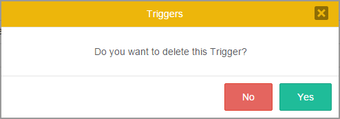
- It is not possible to delete a trigger that is still assigned as a step in a task. Instead, remove the trigger as a step, before deleting the trigger. If the trigger is still assigned as a step, the following warning will be displayed:

10. Pagination control: Use this control to navigate through the pages, which shows 10 files per page.
Note: It is recommended not to change the structure of the process while there are still cases running.
Copy/Import Triggers from a Process
To reuse a trigger from any process within the same workspace, open the process where the trigger will be used. In the main toolbox, click on the Triggers option. In the window that opens, click on the Copy option:

A new window will open with the settings necessary to copy a trigger from a process:
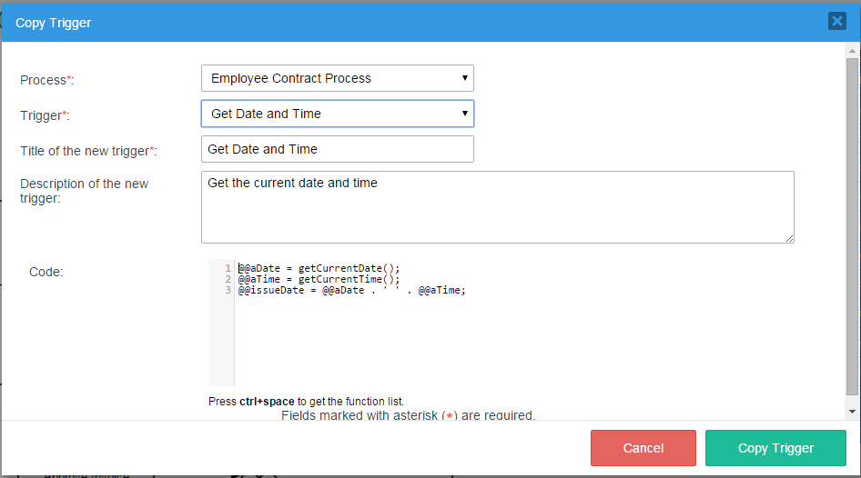
Where:
- Process: Required field. Select the process from which the trigger will be copied/imported.
- Trigger: Required field. Select the trigger that will be copied/imported from the process previously selected.
- Title of the new Trigger: Required field. Give the trigger a title in the current process.
- Description of the new Trigger: Give the trigger a description.
- Code: Once the trigger is imported, its code will be included in this section. Edit it only if it is necessary.
- Cancel: This option cancels the action to import the trigger.
- Copy Trigger: Click on this option to copy and import the trigger.
Creating a Trigger with the Wizard
The Wizard option creates a new trigger using the Trigger Wizard in ProcessMaker. This option is designed to help process designers who don't have much knowledge about the PHP syntax, but still want to be able to create triggers that call a single ProcessMaker function or other available functions. For each function, the Wizard displays a window to input each parameter and enter a variable to store the return value.
To create a trigger with the Trigger Wizard, open the process where the trigger will be used. In the main toolbox, click on the Triggers option. In the window that opens, click on the Wizard option:

The window that is opened contains the services available to create triggers using the Trigger Wizard.
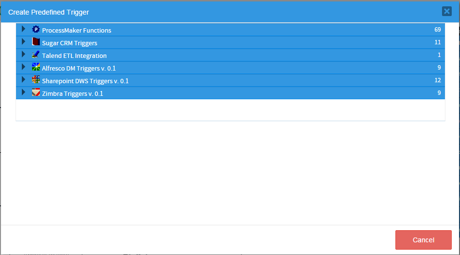
Select the type of function that will be called by the new trigger, such as ProcessMaker Functions or Sugar CRM Functions, etc. Click on the right arrow to expand the list of triggers in a service. Then, select a specific function to use from the list.
ProcessMaker Functions
ProcessMaker has made a number of predefined PHP functions available to be used in triggers and conditions. Click on the down arrow next to "ProcessMaker functions" to view the list of functions:

For example, to get the list of cases, select the function PMF Case List and then the following window is opened:

- Type: Indicates the type of function created. Possible types: Custom, ProcessMaker Functions, Sugar CRM Triggers, Talend ETL Integration, Alfresco DM Triggers v. 0.1, Sharepoint DWS Triggers v. 0.1 and Zimbra Triggers v. 0.1.
- Title: Required Field. Give the trigger a title. The more descriptive the title is, the easier to work with later.
- Description: Enter a brief description about the trigger.
- Parameters: Enter the parameters for the specific function that will be called. For each parameter enter a value, which can be:
- A case variable or a system variable.
- A literal value, such as
644(an integer),-2999.85(a floating point number),"Finance Department"(a string), or"447CEAF7BE6AEB747CEB6EB5526B"(a ProcessMaker unique ID). If the parameter type is a string, ProcessMaker will automatically enclose it in double quotation marks if it doesn't start with @. If the string contains a double quotation mark ("), escape it with a backslash. For example:"Say \"hello\""
If the parameter type is an integer or floating point number, ProcessMaker will automatically convert it to a number if it doesn't start with @, so a string value such as"client1"gets converted to0.
- A literal value, such as
- Help icon (Parameters): Hover the mouse pointer to see the description of the parameter:

- Insert Variable button: Use the @@ button to insert either system or case variables.
- Variable to Hold the Return Value: Required Field. Some functions have a return value. It is recommended to assign the return value to a case variable, such as
@@ReturnVal, so that this value can later be examined in the Process Debugger if errors occur. It doesn't matter what type cast is used in the case variable, because ProcessMaker ignores the type cast when assigning values to case variables, so@%ReturnValis the same as@@ReturnVal. - Help icon (Return Value): Hover the mouse pointer to see a brief the description of the return value.
- Cancel: Discards any changes and cancels the creation of the new trigger by closing the current modal window.
- Save: This option saves the configuration. When the trigger is created, the page will be redirected to the main list of triggers and a flash message will appear indicating that the trigger has been saved.
Sugar CRM Triggers
Warning: The Sugar CRM Triggers wizard is being deprecated.
SugarCRM is a web-based customer relations management (CRM) tool that facilitates the use of customer support, marketing and sales business roles by bringing them together under a unified software system. This allows customer relations specialists to quickly and efficiently deal with a wide range of customer demands.
Although SugarCRM can be accessed through a website, its functionalities have been integrated with ProcessMaker, meaning that users can manage SugarCRM through web services. By clicking on "Sugar CRM Triggers", the available triggers will be displayed:
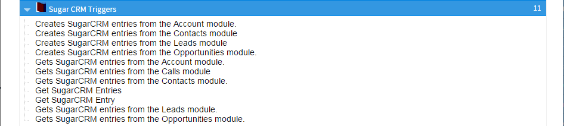
Read this documentation for a detailed description of each trigger.
Alfresco DM Triggers v. 0.1
Warning: The Alfresco DM Triggers v. 0.1 wizard is being deprecated.
Alfresco is an open source Enterprise Content Management (ECM) system for Microsoft Windows and Unix-like operating systems. The Alfresco functions allow ProcessMaker triggers to manage documents and folders in Alfresco. By clicking on "Alfresco DM Triggers v. 0.1", the available triggers will be displayed:
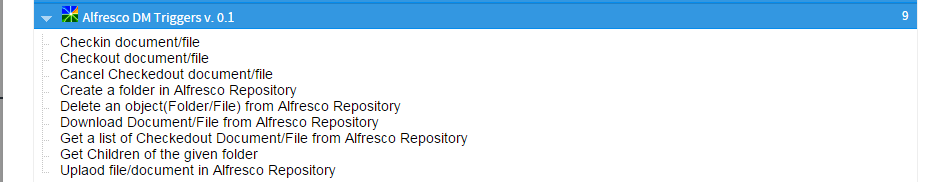
Read this documentation for a detailed description of each trigger.
Warning: The Sharepoint DWS Triggers v. 0.1 wizard is being deprecated.
Microsoft Office SharePoint Server includes document management features that you can use to control the life cycles of documents in your organization — how they are created, reviewed, published, secured, and consumed, and how they are ultimately disposed of or retained. By clicking on "Sharepoint DWS Triggers v. 0.1", the available triggers will be displayed:
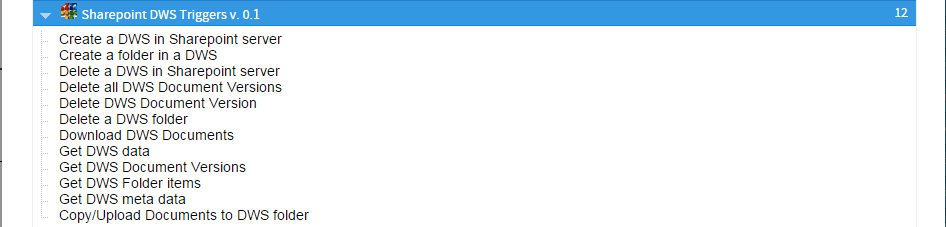
Read this documentation for a detailed description of each trigger.
Zimbra Triggers v. 0.1
Warning: The Zimbra Triggers v. 0.1 wizard is being deprecated.
Zimbra integration allows users to navigate through ProcessMaker by using the Zimbra application. Moreover, it allows users to create folders, contacts and appointments using triggers. By clicking on "Zimbra v Triggers. 0.1", the available triggers will be displayed:

Read this documentation for a detailed description of each trigger.
Inserting a Trigger in a Process
After creating a trigger, it can be inserted at various points in a process. Log in to ProcessMaker with a user such as "admin" who has the PM_FACTORY permission in his/her role. Then, open a process for editing.
- In the process map, right click on the task where the trigger will be fired and select the Steps option from the menu:
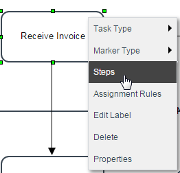
- To select the runtime for a given trigger, go to the Triggers section inside the Available Elements panel and grab the trigger that will be assigned and drag it to where it will be executed. Notice that when expanding each step, there are two sections: "Before (Dynaform, Input Document, Output Document)" and "After (Dynaform, Input Document, Output Document)". In the Assignment section, steps can be placed only "Before Assignment" and in the section "Routing"; triggers can be assigned "Before Routing" or "After Routing"..

A flash message is shown at the top of the panel indicating that the step was assigned correctly.
- Drop the element into the gray space enabled and the step will be added:
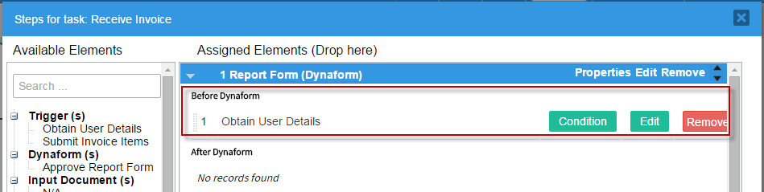
Firing Triggers Based on Conditions
To set the trigger to fire only in certain situations, enter a condition that must evaluate to true for the trigger to be fired. Use the @@ button to insert system and case variables in the condition. If the trigger does not have a condition, it will always be executed.
To add a condition to a trigger, go to the Triggers section inside the Assigned Elements panel and click the Condition button:
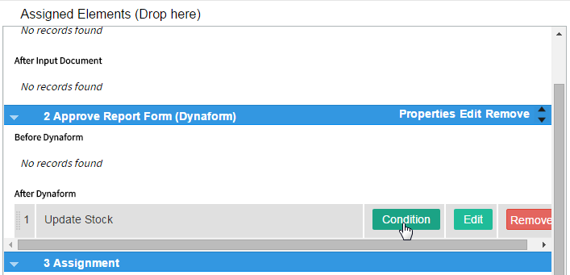
The window that is displayed has the @@ button, which allows adding existing variables. Enter the condition in the Condition field and save the settings by clicking on the Save button:
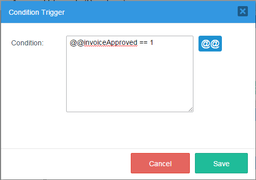
The "*" mark will appear in the Condition button of the trigger to indicate that its execution is based on a condition. This visual clue reminds process designers which triggers have defined conditions, which is helpful when trying to figure out why a trigger did not fire:

Debugging Triggers
When running cases, it is possible to see when triggers are executed and the value of system and case variables by turning on the ProcessMaker Debugger.
Enabling Debug Mode
There are two ways to enable Debug Mode. When its enabled, the ProcessMaker Debugger will be displayed in a left sidebar while running cases of a particular process.
Log in to ProcessMaker with a user such as "admin" who has the PM_FACTORY permission in his/her role. Then, go to the Designer menu. Right click on a process in the list and select the Enable Debug Mode option from the dropdown menu.

Debug Mode can also be enabled while editing a process. Right click on a blank area in the Process Map and select the option Edit Process from the menu.

In the Edit Process dialog box, mark the Debug checkbox:

Using the ProcessMaker Debugger
To use the ProcessMaker Debugger, run a case of a process that has Debug Mode enabled. The ProcessMaker Debugger will appear in a left-hand sidebar, listing the system and case variables and the code of the triggers that have just been executed.
Variables Tab
The Variables tab shows the values of the system variables and the case variables in the case currently open. To see the content of long strings and arrays, click on a variable to see its value displayed in the box below.
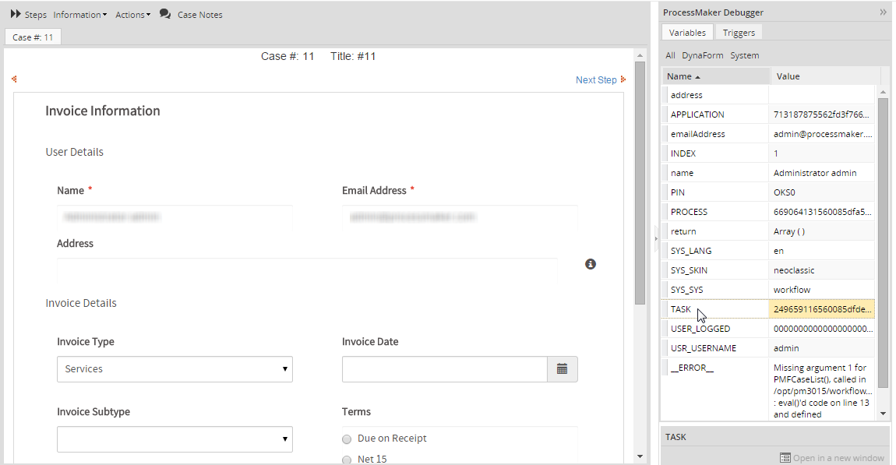
The list of variables can be filtered by clicking on the buttons at the top:
- All: Displays all system and case variables in the current case.
- DynaForm: Displays the case variables in the current case.
- System: Displays the system variables.
Triggers Tab
The Triggers tab shows which triggers have just been executed and whether they were executed before or after the last step or routing. To see a particular trigger's code, click on the trigger and its code will be displayed in the box below.

To see a trigger's code in a separate window, click on Open in a New Window.

After each step, the debugger will pause the case so the variables and triggers can be examined in the debugger. To continue running the case, click on the Continue button.

The debugger will also pause after the task has been routed, so the results of the triggers from before assignment, before routing and after routing can be examined.
Viewing Error Messages
If a fatal PHP error occurs in the trigger code when running a case, a message will be displayed in red saying "Fatal error in trigger" and the error message will be placed in the @@__ERROR__ system variable.
To see the error message, either turn on the debugger or examine the error in the wf_WORKSPACE.APPLICATION.APP_DATA field in the database.

If PHP is configured to stop on errors, then the case will stop and a PHP error message will be displayed in the right panel:

If a PHP warning or non-fatal error (such as a syntax error) occurs while executing a trigger, the execution of the trigger will stop and a message will be displayed at the top of the right panel. Nonetheless, the execution of the case will continue so the user can work on the next step in the task. These are the only types of error messages whose line numbers correspond to the line numbers of the trigger code.

While all of the types of errors previously mentioned are immediately obvious to the user running the case, ProcessMaker exceptions will not be displayed to the user when running a case. When a ProcessMaker exception occurs, the system variable @@__ERROR__ is created to store its error message.
When canceling/pausing/reassigning/opening cases
A trigger can be executed when deleting, canceling, pausing, reassigning or opening cases. To set a trigger to fire at one of these points, open a process for editing and right click on a blank area of the process map and select Edit Process from the context menu.
In the Edit Process dialog box that opens, select a trigger in the following dropdown boxes:
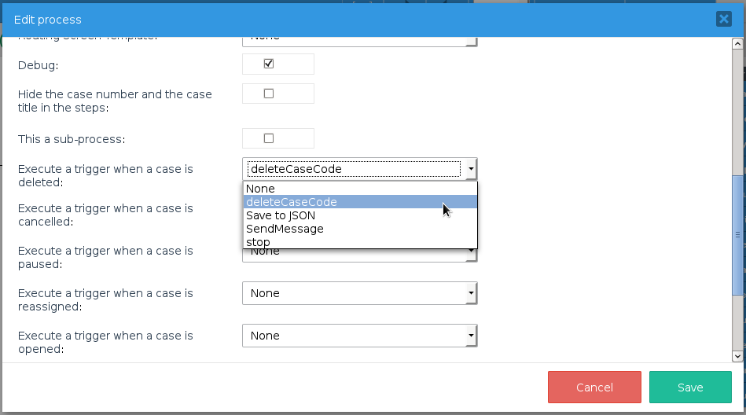When the user deletes, cancels, pauses, reassigns or opens a case, the selected trigger will be executed. The exact point when the trigger is executed depends on the action:
- When deleting or canceling a case, the trigger is executed before the action takes place, so it is possible to stop the action by calling die() in the trigger. Note that deleting a case is only possible when in the the first task, meaning that the case is removed from the database. In subsequent tasks, it is only possible to cancel a case, meaning that the case remains in the database, but its status is changed to "CANCELLED" so it can no longer be opened and worked on.
- When pausing or reassigning a case, the trigger is executed after the action takes place, so it is not possible to stop the action by calling die(). However, it is possible to undo the reassignment of a case by calling Cases::reassignCases() in the trigger and reassigning it back to the original user. Likewise, it is possible to undo the pausing of a case by calling Cases::unpauseCase() in the trigger.
- When opening a case, the trigger is executed after a new case is created or after an existing case is loaded, so it is possible to access the case's variables in the trigger. However, the trigger is executed before the case is displayed to the user, so it is possible to prevent the user from seeing the case by calling die() in the trigger. It is also possible to display a message above the case when it opens by calling G::SendMessageText().
When the trigger is executed, the @@APPLICATION system variable will be set to the unique ID of the case that is being deleted/canceled/paused/reassigned/opened, so it is possible to use executeQuery() to look up information about that case in the database in tables such as APPLICATION, APP_CACHE_VIEW, APP_DELEGATION, APP_DOCUMENT, etc.
Example: When a case is reassigned, the following trigger sends an email message to the user who is newly assigned to the case, plus a carbon copy to the user who was previously assigned to the case.
//use order by descending to get the highest delegation index, which is the record for the reassigned case
$query = "select * from APP_CACHE_VIEW where APP_UID='$caseId' order by DEL_INDEX desc";
$aDels = executeQuery($query);
if (!is_array($aDels) or count($aDels) == 0) {
$g = new G();
$g->SendMessageText("Error in query:\n$query", "WARNING");
}
else {
//Case Info if needing to send it to template:
$caseNo = $aDels[1]['APP_NUMBER'];
$newUserId = $aDels[1]['USR_UID'];
$prevUserId = $aDels[1]['PREVIOUS_USR_UID'];
$caseStartDate = $aDels[1]['APP_CREATE_DATE'];
$aUser = PMFInformationUser($newUserId);
$aPrevUser = PMFInformationUser($prevUserId);
$to = "{$aUser['firstname']} {$aUser['lastname']} <{$aUser['mail']}>";
$cc = "{$aPrevUser['firstname']} {$aPrevUser['lastname']} <{$aPrevUser['mail']}>";
PMFSendMessage(@@APPLICATION, 'manager@example.com', $to, $cc, '',
'Reassigned to case '.$caseNo, 'ReassignCaseTemplate.html');
}
Timeout Triggers for Self Service Tasks
A timeout trigger can be set for Self Service and Self Service Value Based Assignment tasks, that will be executed if the task is not claimed by a user after a set amount of time. Timeout triggers are executed when the cron.php file on the ProcessMaker server is executed.
When a timeout trigger is executed, the system variables will not be updated for the current task, so the following system variables listed below will not be accurate. They will be set to the values in the most recent task worked on in the case, which is generally the task before the self service task, but it could be a parallel task (if the process contains any parallel tasks):
@@TASK: Set to the ID of the task that was most recently worked on.@%INDEX: Set to the delegation index of the task that was most recently worked on. To get the delegation index of a self service task, look it up in the APP_DELEGATION.DEL_INDEX field in the database. See the example below.@@USER_LOGGED: Since the timeout trigger is executed by cron.php, there will be no user logged in, so@@USER_LOGGEDis set to the ID of the user who most recently worked on the case. To get the ID of the user who worked on the task before the self service task, it is recommended to save the @@USER_LOGGED in a case variable in the prior task. See the example below.@@USR_USERNAME: Since the timeout trigger is executed by cron.php, there will be no user logged in, so@@USR_USERNAMEis set to the ID of the user who most recently worked on the case. To get the ID of the user who worked on the task before the self service task, it is recommended to save the @@USR_USERNAME in a case variable in the prior task. See the example below.
In a timeout trigger, the Cases::setCatchUser() method can be used to automatically assign a user to the task.
Any timeout triggers scheduled are executed when unassigned cases are listed as DONE in the output of the cron.php file. Cron executions for timeout triggers are also registered in the cron logs.